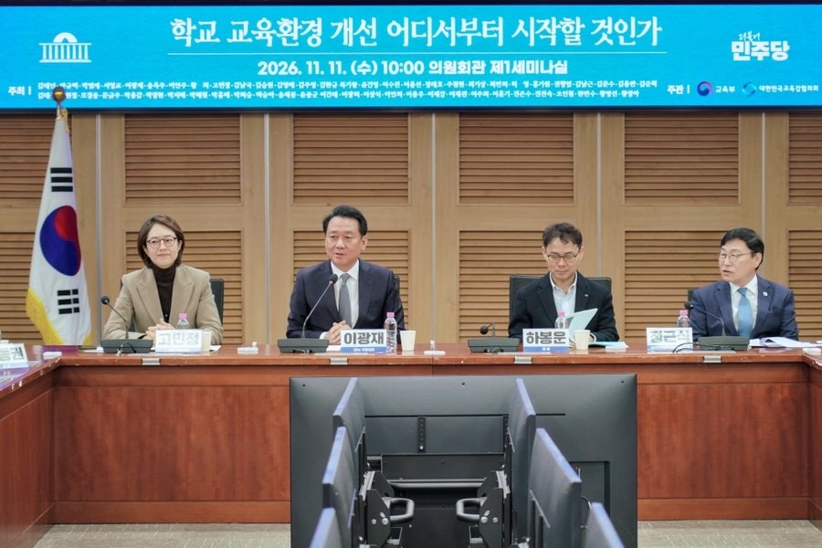
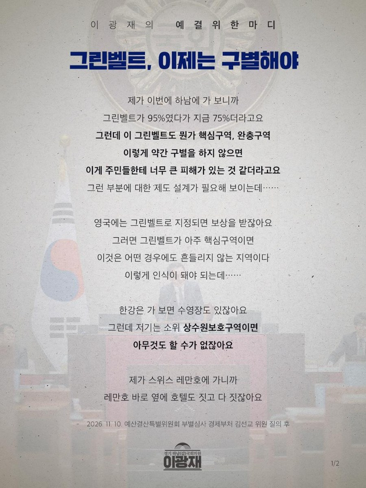
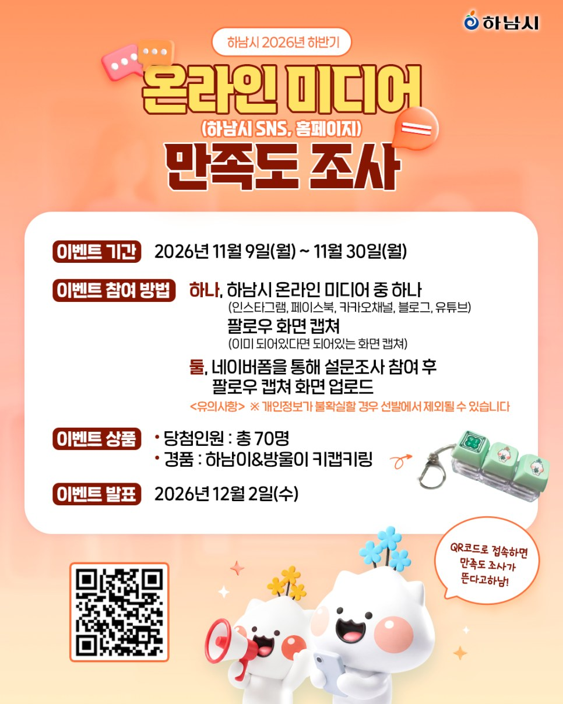
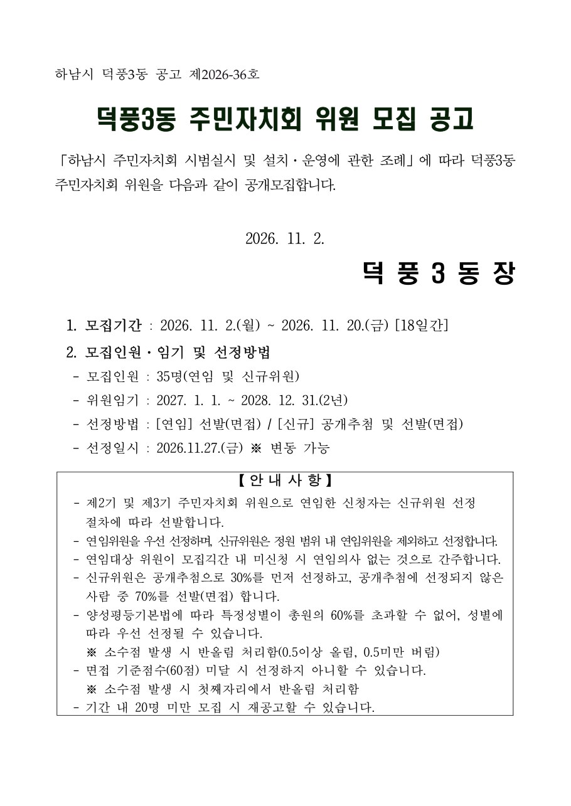

78호 | 2026년 11월 12일 발행
📌 우하소 뉴스레터 목차
- 우리동네 국회의원 이광재
- 하남 지역 주요 뉴스
- 하남 맘카페 HOT 이슈
- 공공기관 소식지
- 하남 행사일정 달력
 우리동네 국회의원 이광재
우리동네 국회의원 이광재
📝 현장일지
이광재의원, "교육은 중앙과 지방이 함께 해결해야 합니다"
• 예결위 회의 중 짬을 내어 '학교 교육환경 개선, 어디서부터 시작할 것인가' 토론회 참석
• 국정감사에서 지적한 낡은 학교 책걸상 영상이 조회수 20만 회를 넘기며 전국 학생 댓글 쇄도
• "교과서랑 필통만 놓으면 다 차요", "허리 통증은 아직도 똑같아요" 등 교실 속 불편 호소
• 지방교육재정교부금에만 맡기지 않고 중앙·지방정부가 교육문제를 함께 푸는 공감대 형성 다짐
• 목소리를 내 준 학생들에게 감사 인사
• 국정감사에서 지적한 낡은 학교 책걸상 영상이 조회수 20만 회를 넘기며 전국 학생 댓글 쇄도
• "교과서랑 필통만 놓으면 다 차요", "허리 통증은 아직도 똑같아요" 등 교실 속 불편 호소
• 지방교육재정교부금에만 맡기지 않고 중앙·지방정부가 교육문제를 함께 푸는 공감대 형성 다짐
• 목소리를 내 준 학생들에게 감사 인사

📌 출처: 이광재 공식 네이버 블로그
📝 현장일지
이광재의원, "그린벨트, 이제는 구별해야"… 예결위 경제부처 부별심사 발언
• 11월 10일 예결위 경제부처 부별심사에서 하남 그린벨트 문제 제기
• 하남 그린벨트가 95%에서 75%로 줄었지만 핵심·완충구역 구별이 없어 주민 피해가 크다고 지적
• 영국처럼 지정 지역에 보상하는 제도 설계 필요, '최소한 파크골프장이라도' 하는 주민 목소리 전달
• 용인 반도체 용수·전력 문제도 지역과 이익을 나누는 보상체계가 있어야 빨리 풀린다고 강조
• 법률로 한 번에 정비하는 시기를 만들자고 제안
• 하남 그린벨트가 95%에서 75%로 줄었지만 핵심·완충구역 구별이 없어 주민 피해가 크다고 지적
• 영국처럼 지정 지역에 보상하는 제도 설계 필요, '최소한 파크골프장이라도' 하는 주민 목소리 전달
• 용인 반도체 용수·전력 문제도 지역과 이익을 나누는 보상체계가 있어야 빨리 풀린다고 강조
• 법률로 한 번에 정비하는 시기를 만들자고 제안

📌 출처: 이광재 공식 네이버 블로그
📰 언론보도
[경향신문] 이광재의원 "학교시설 개선, 중앙·지자체·교육청이 함께 부담하는 큰 전환점 돼야"
이광재 국회 예산결산특별위원장이 11일 국회에서 열린 '학교 교육환경 개선, 어디서부터 시작할 것인가' 토론회에서 이번 논의를 중앙정부와 지자체, 교육청이 학교시설 개선 재정을 함께 부담하는 "큰 전환점"으로 삼아야 한다고 강조했습니다. 토론회에서는 전국 학교 책걸상의 28%, 냉난방기의 16%가 교체 기준인 내구연한을 넘겼다는 발제가 나왔고, 교육환경개선사업비가 1년 새 30.8% 줄어 교부금 외 별도 재원이 필요하다는 의견도 제기됐습니다.
📌 출처: 경향신문 (김지혜 기자)
📰 언론보도
[더팩트] 이광재의원, 예결위 전체회의 주재하며 발언
이광재 예산결산특별위원장이 10일 오전 서울 여의도 국회에서 열린 예산결산특별위원회 전체회의를 주재하며 발언했습니다. 예결위는 부별심사를 이어가며 2027년도 예산안을 심사하고 있습니다.
📌 출처: 더팩트 (남용희 기자)
📰 하남 지역 주요 뉴스
🧠 건강
하남시, 중단됐던 '정신건강 심리상담 바우처' 13일부터 재개… 1인 8회 전문상담
하남시가 올해 전국적인 예산 부족으로 조기 종료됐던 '정신건강 심리상담 바우처사업'을 국·도비 2,900만 원을 추가로 확보해 11월 13일부터 다시 시작합니다. 경기도에서 추가 예산으로 사업을 재개하는 시군은 하남시를 포함해 두 곳뿐입니다. 상담 필요성을 인정받았거나 정신건강의학과 진단서·소견서를 받은 시민 등은 나이·소득과 관계없이 관내 13개 기관에서 1인당 8회 상담을 받을 수 있고, 본인부담금은 소득에 따라 0~50%입니다. 신청은 동 행정복지센터나 복지로에서 하면 됩니다.
📌 출처: 국제뉴스 (강정훈 기자) · 하남시 보도자료 (문의 하남시보건소 정신건강팀 031-790-5849)
🏛️ 시의회
오승철 하남시의회 자치행정위원장 "베드타운 4년, 달라진 게 없다"… 하남 개발사업 방향 재정립 촉구
오승철 하남시의회 자치행정위원장이 10일 제354회 임시회 시정질문에서 미사섬 K-스타월드, 캠프콜번, 망월동 5성급 호텔 등 주요 개발사업의 문제점을 짚었습니다. 정부 주택공급지에 포함된 미사섬이 고밀도 아파트로 채워져서는 안 된다며, 18일까지인 의견 제출 기간에 물량 축소 의견을 내라고 요구했고, 망월동 호텔 사업에는 용도변경 특혜 우려를 제기했습니다. 교산 AI 혁신클러스터를 집중 육성하고, 주택 공급에 치우친 개발 대신 문화시설·일자리·기업 유치가 함께 가는 도시 전략을 세우라고 촉구했습니다.
📌 출처: 서울신문 서울Pn
💬 하남 맘카페 HOT 이슈
이번 주 하남 지역 맘카페(미사맘스클럽, 정다운 감일맘, 하남미사교산4050, 아이품애 하남맘 등)와 지역 커뮤니티에서 많이 오르내린 HOT 이슈 TOP 3입니다.
1️⃣ [육아] "유치원 발표 어떻게 되셨나요?"… 우선모집 '광탈' 뒤 어린이집 찾기 분주
현황: 유치원 우선모집 결과가 나오면서 "전부 광탈이에요", "만4세는 뽑는 인원이 적다"는 글이 이어졌고, 떨어진 가정은 22년생(만 4세반)을 받아 주는 어린이집을 찾고 있습니다. 미사맘스클럽에는 시립 루나리움·샛별·강변, 미사다온 등 어린이집 후기를 묻는 글과 함께 맞벌이 가정의 "석식 주는 어린이집 있나요", "7세까지 다닐 수 있는 곳" 질문이 많았습니다. 감일에서는 시립 감일한별·라포레숲속어린이집, 감일초병설유치원 정보를 찾는 글이, 위례에서는 우선모집에 붙은 유치원 시설·프로그램을 묻는 글이 올라왔습니다.
💡 주민 포인트: 국공립 어린이집 입소 대기는 '임신육아종합포털 아이사랑'에서 여러 곳을 함께 신청하고 순번을 확인할 수 있습니다. 유치원 일반모집 일정은 '처음학교로'에서 꼭 확인하세요. 교실 넓이·급간식·연장반 차량처럼 직접 봐야 아는 부분은 상담 때 꼼꼼히 물어보는 것이 좋습니다.
💬 주민 반응: "작년에 그냥 보낼걸" 하는 아쉬움과 함께, 단지별로 괜찮은 어린이집을 서로 추천하며 정보를 나누는 분위기였습니다.
📌 출처: 네이버 카페 (미사강변도시 미사맘스클럽, 정다운 감일맘, 송파맘♥위례맘홀릭, 아이품애 하남맘)
2️⃣ [교통] "13일까지 의견 내 주세요"… 5차 국가철도망 설문에 3호선·위례신사선 감일 연장 목소리
현황: 감일 지역 카페에는 국토교통부가 「제5차 국가철도망 구축계획」 수립을 위해 11월 13일(금)까지 대국민 의견수렴 설문을 받는다는 안내가 공유됐습니다. 감일2·교산 등 인구가 크게 늘어나는 만큼 3호선(송파하남선) 적기 착공과 위례신사선 감일 연장 의견을 내자는 글이 이어졌고, 하남 GTX-D와 위례신사선 건의 내용을 정리한 글도 올라왔습니다. 미사맘스클럽에는 "출근길 방화행 열차를 놓치면 14분을 기다려야 한다"며 5호선 배차간격을 하소연하는 글이 있었습니다.
💡 주민 포인트: 설문 마감이 내일(13일, 금)입니다. 하남 철도망 확충에 의견을 보태고 싶다면 마감 전에 참여해 보세요. 이광재 의원은 하남 교통을 국가 프로젝트로 추진하는 데 힘을 쏟고 있습니다.
💬 주민 반응: "교산 입주 뒤에도 몇 년은 지하철이 없다"는 걱정 속에, 이웃에게 설문 참여를 권하는 글이 많았습니다.
📌 출처: 네이버 카페 (좋은예감 일등도시 감일스윗시티, 하남 미사 위례 교산 연합 정보카페, 미사강변도시 미사맘스클럽)
3️⃣ [교육] "하남고 가려면 선행이 필수인가요?"… 예비 고1 고교 선택·학원 고민
현황: 기말고사를 앞두고 예비 고1 학부모들의 고교 선택 고민 글이 늘었습니다. 하남미사교산4050에는 "학원 설명회마다 하남고는 공통수학 1·2 선행이 안 돼 있으면 따라가기 어렵다고 한다"는 진학 갈등 글과 하남고 수학학원, 미술입시 질문이 올라왔고, 국어와 과학 중 무엇을 먼저 보강할지 묻는 글도 있었습니다. 학교마다 같은 통합과학인데 시험 난도가 다르다는 글, 감일중에서 감일고 진학을 묻는 글, 이사로 인한 중학교 전학·학구 문제를 묻는 글도 이어졌습니다.
💡 주민 포인트: 광주하남교육지원청 주관 1:1 진로컨설팅에 다녀왔다는 후기와, 하남지역 고등학교 교육과정 설명회를 온라인으로도 볼 수 있다는 안내가 공유됐습니다. 학원 설명회만 듣기보다 교육지원청·학교 설명회 자료를 함께 비교해 보세요.
💬 주민 반응: 선행 부담을 걱정하는 목소리와 함께, 학교별 분위기와 학원 정보를 서로 나누는 분위기였습니다.
📌 출처: 네이버 카페 (하남미사교산4050, 미사강변도시 미사맘스클럽, 정다운 감일맘, 아이품애 하남맘)
🏛️ 공공기관 소식지
2026년 11월 12일 기준 하남시 공공기관 주요 공고·신청 안내입니다.
📱 하남시 | 11.9(월)~11.30(월) · 추첨 70명
하남시 하반기 온라인 미디어 만족도 조사 — 설문 참여하고 하남이·방울이 키캡키링 받아 가세요
"하남시 SNS에 바라는 점을 들려주세요"
하남시가 SNS를 더 알차게 운영하기 위해 2026년 하반기 온라인 미디어(SNS·홈페이지) 만족도 조사를 진행합니다.
🗓 기간: 11월 9일(월) ~ 11월 30일(월)
✍️ 참여 방법: ① 하남시 온라인 미디어(인스타그램·페이스북·카카오채널·블로그·유튜브) 중 하나를 팔로우한 화면 캡처(이미 팔로우했다면 그 화면) ② 네이버폼 설문 참여 후 캡처 화면 업로드
🎁 경품: 추첨 70명, 하남이&방울이 키캡키링
📢 발표: 12월 2일(수)
⚠️ 유의: 개인정보가 불확실하면 선발에서 제외될 수 있습니다
하남시가 SNS를 더 알차게 운영하기 위해 2026년 하반기 온라인 미디어(SNS·홈페이지) 만족도 조사를 진행합니다.
🗓 기간: 11월 9일(월) ~ 11월 30일(월)
✍️ 참여 방법: ① 하남시 온라인 미디어(인스타그램·페이스북·카카오채널·블로그·유튜브) 중 하나를 팔로우한 화면 캡처(이미 팔로우했다면 그 화면) ② 네이버폼 설문 참여 후 캡처 화면 업로드
🎁 경품: 추첨 70명, 하남이&방울이 키캡키링
📢 발표: 12월 2일(수)
⚠️ 유의: 개인정보가 불확실하면 선발에서 제외될 수 있습니다

📌 출처: 하남시 공식 블로그 (하남스토리)
🏘️ 덕풍3동 행정복지센터 | 11.2(월)~11.20(금) · 35명
덕풍3동 4기 주민자치위원 35명 공개모집 — 20일(금)까지
"우리 동네 일은 우리가 함께 정합니다"
덕풍3동이 「하남시 주민자치회 시범실시 및 설치·운영에 관한 조례」에 따라 주민자치회 위원을 공개모집합니다.
🗓 모집기간: 11월 2일(월) ~ 11월 20일(금) (전자접수는 마감일 18:00까지)
👥 모집인원·임기: 35명(연임·신규) · 2027.1.1. ~ 2028.12.31.(2년)
☎️ 문의: 덕풍3동 행정복지센터 031-790-6650
덕풍3동이 「하남시 주민자치회 시범실시 및 설치·운영에 관한 조례」에 따라 주민자치회 위원을 공개모집합니다.
🗓 모집기간: 11월 2일(월) ~ 11월 20일(금) (전자접수는 마감일 18:00까지)
👥 모집인원·임기: 35명(연임·신규) · 2027.1.1. ~ 2028.12.31.(2년)
☎️ 문의: 덕풍3동 행정복지센터 031-790-6650

📌 출처: 하남시 덕풍3동 행정복지센터 (공고 제2026-36호)
📅 하남 행사일정 달력
행사 달력
일
월
화
수
목
금
토
달력을 불러오는 중입니다…
© 2026 우리동네 진짜일꾼 이광재